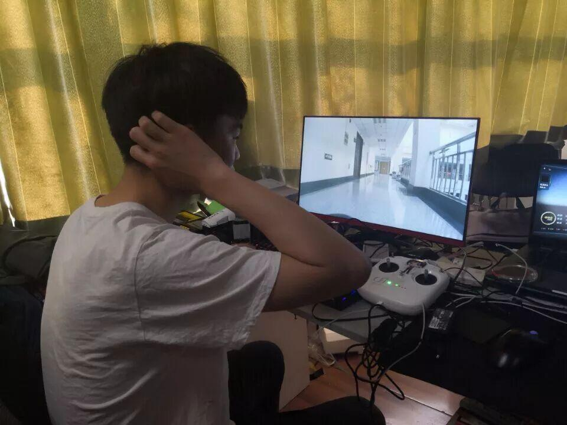
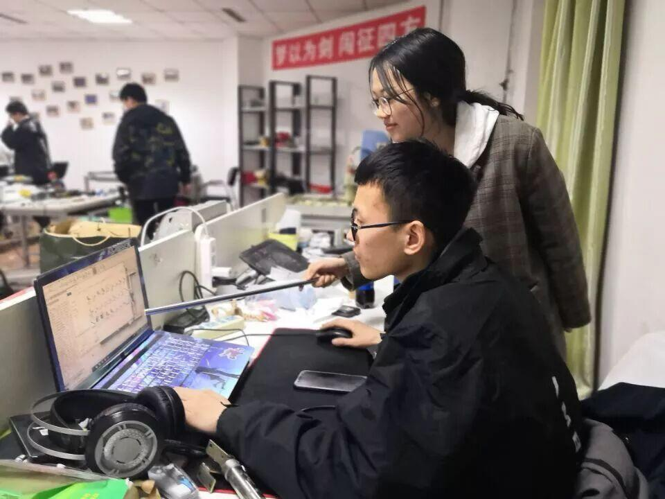
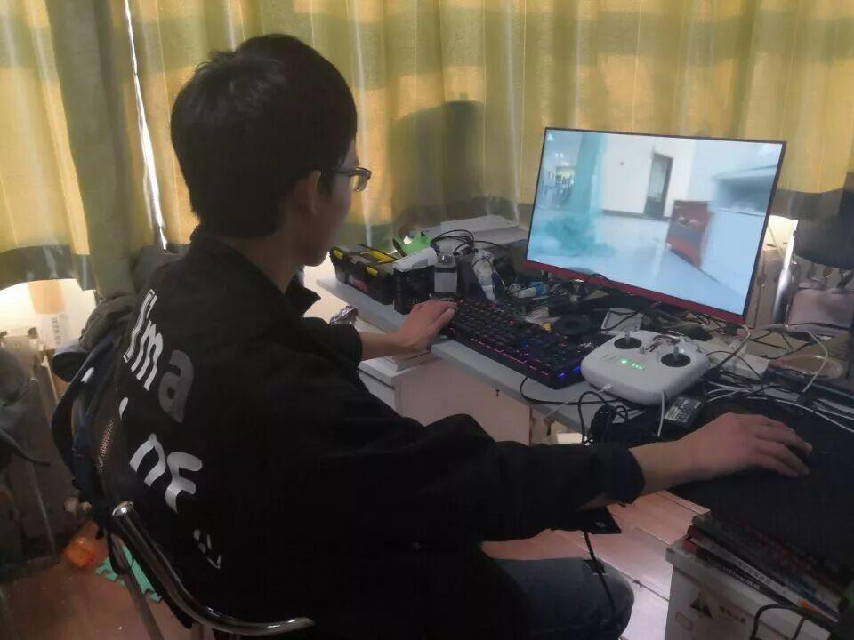
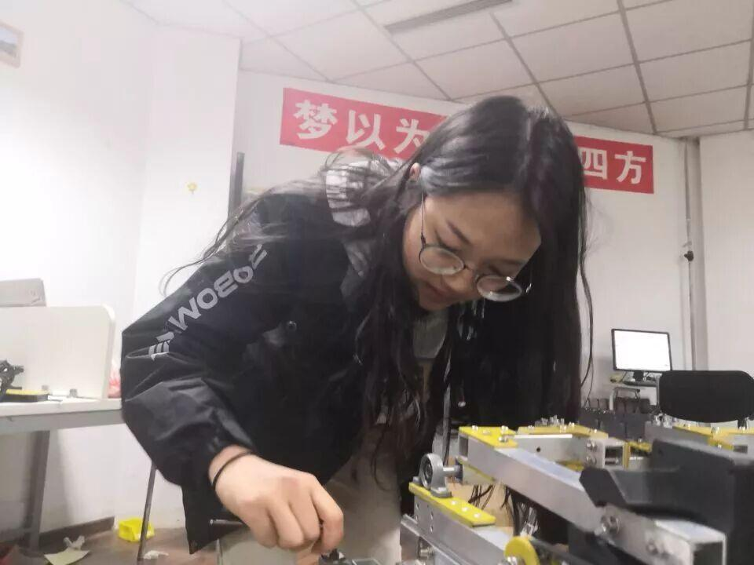

距离RoboMaster北部分区赛仅剩9天
距Ambition战队出征 仅剩7天！ 我们一直在努力 未敢有半点松懈 敲准每一个代码 拧紧每一颗螺丝 丝毫的不完美也会一次一次的调试 永远熬不完的夜 和流不尽的汗水 RoboMaster,我们来了!  英雄就是对任何事都有全力以赴，自始至终，心无旁骛的人 —波德莱尔 干了这碗心灵鸡汤（嗯，好喝） 超越对手 挑战自我 是我们的目标 以最大的努力 面对最艰巨的挑战 无论结果如何 我们都为赛场上的选手感到自豪 在最短的时间里 做最充分的准备 被时间追赶的人 从不敢停下脚步 最后九天 不论前方是荆棘 亦有可能是坎坷 但当你全力以赴 一切都会是值得     星光不负赶路人 时间不负有心人 冲鸭!你们就是电协最靓的崽 💪💪💪  左拥右抱.jpg 缩骨功.jpg 认真脸.jpg 团结就是力量.jpg  愿所有的汗水都会有收获 愿所有的努力都不被辜负 emmm...还有一件“小事” 微信识别小程序投票啦！ 你不投我不投 投票规则 即日起至6月10号18:00整 每人每天可投一票 投票成功自动获得抽奖机会 奖品池 一等奖：OSMO Pocket 3台 二等奖：Tello无人机 9台 三等奖：RM 周边大礼包 15份 开奖时间 三大赛区决赛日当天 （5月19日，5月26日，6月2日） 参与投票即可获得抽奖机会 投票累计次数越多，中奖几率越大 获奖结果将公布在 【RoboMaster】官方微信公众号 微信扫描上图即可参加投票 - END - 编辑：杜遇涵 |